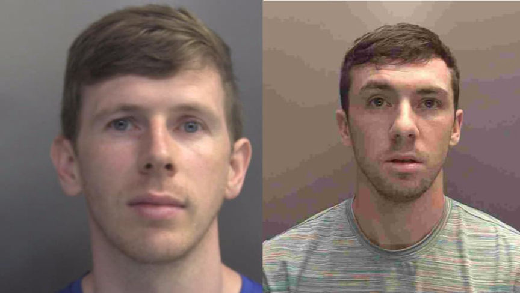
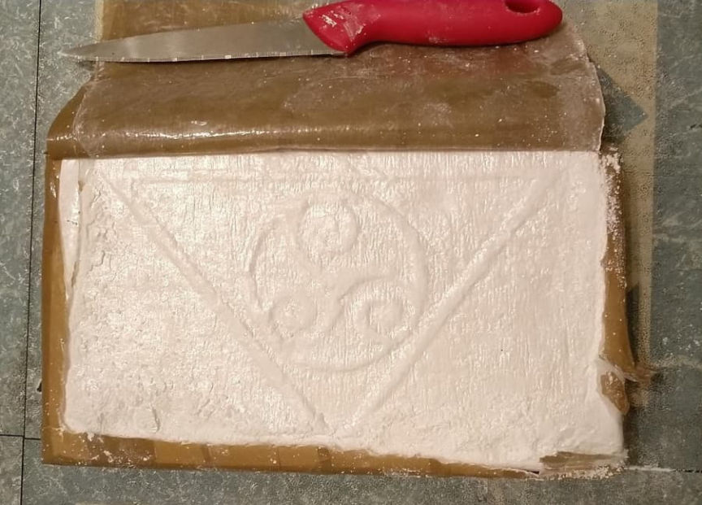
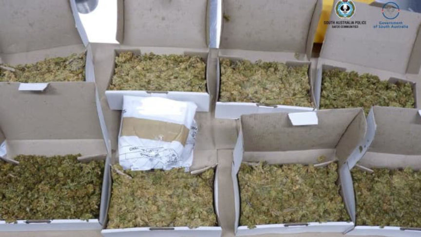
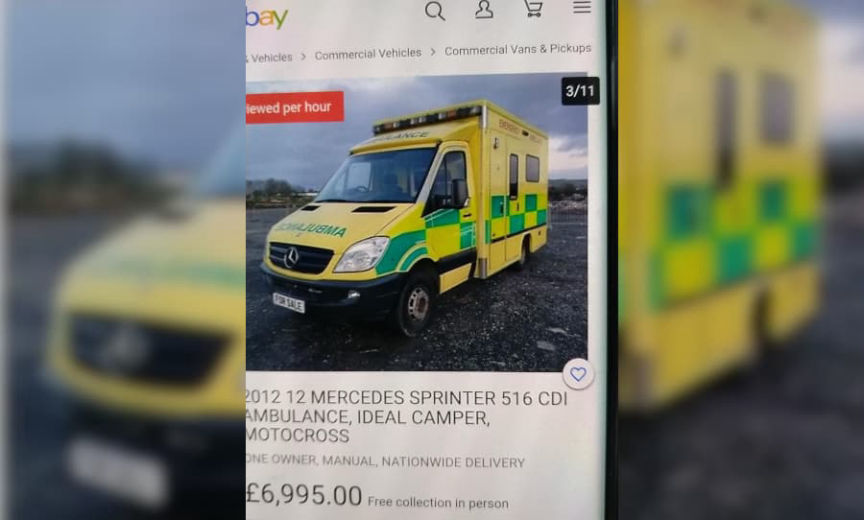
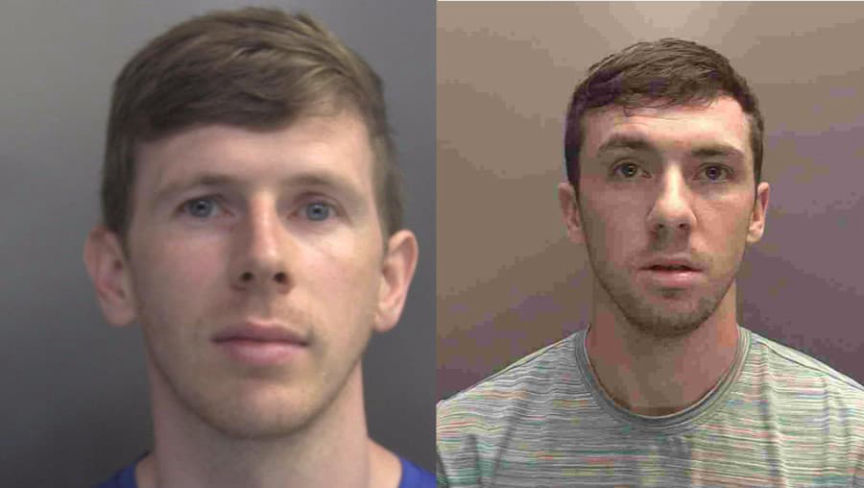
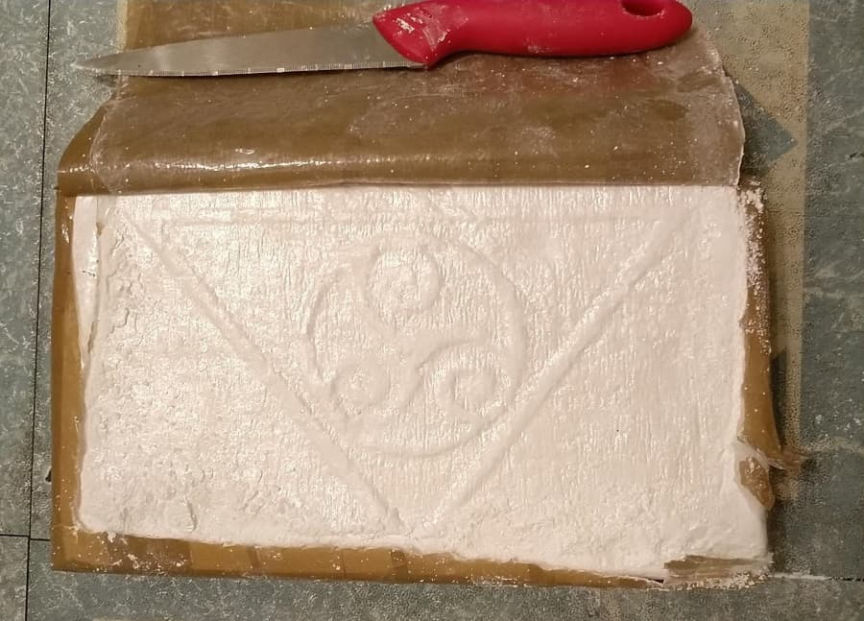
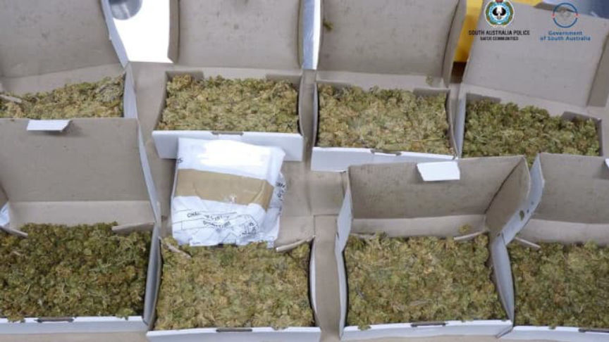
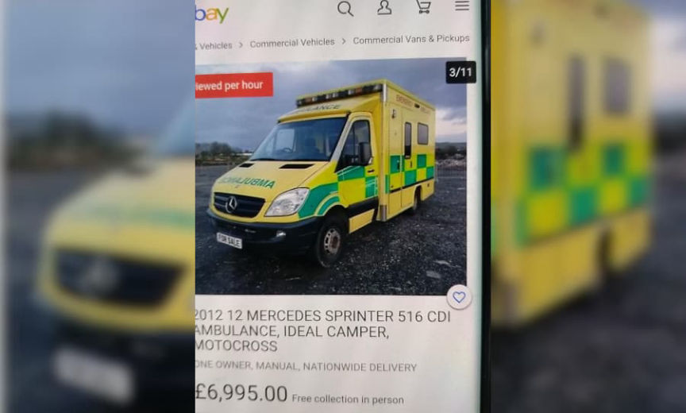

EncroChat: Drug Dealer Sentenced to 14 Years in Prison
A drug dealer who the police identified through EncroChat was sentenced to 14 years in prison at Liverpool Crown Court.
Martin Peter Grant, 33, was sentenced to 14 years and six months in prison at Liverpool Crown Court. Grant previously pleaded guilty to conspiracy to supply Class A drugs (heroin and cocaine) and to conspiracy to supply Class B drugs (cannabis and ketamine).

Last month, a court sentenced Grant’s younger brother Liam Grant, 25, to four years and six months in prison after he had pleaded guilty to the same charges.
According to an announcement from the Merseyside Police, the arrests are a part of Operation Venetic. Police described the operation as “an international operation targeting criminals who used a mobile encryption service, commonly referred to as EncroChat, in an attempt to evade detection.”

“Martin led the family enterprise, which involved them both using the dark web in an attempt to conceal their underworld drug dealing. He used the handle Swiftorchid, while younger brother Liam went by the name Beigepalm.”
From the article about the arrest of the darkweb MDMA vendor “HundredsUK”:
“EncroChat called itself “an end-to-end security solution” that provided customized Android handsets as well as an OTR messaging application. EncroChat usually sold Samsung phones with a modified version of Android. Some units had no functioning GPS, camera, or microphone. The phones came pre-installed with the EncroChat application as well as other applications provided by the company. EncroChat, the application, “routed conversations through a central server based in France.” The service had roughly 60,000 users at the time of its closure.”

“The French National Gendarmerie, assisted by law enforcement in the Netherlands, installed malware on EncroChat servers in France. “The malware allowed them to read messages before they were sent and record lock screen passwords,” according to a Wikipedia entry on the company. The malware affected more than half the devices in Europe, according to the company. Law enforcement agencies worldwide received access to the data pulled from the hacked EncroChat server.”
Merseyside Police detectives identified the brothers by examining “a series of messages and photographs” shared through EncroChat. In one example provided by the police, the brothers discussed ways to travel unmolested by law enforcement during lockdowns. One of the brothers shared a screenshot of an eBay listing for an ambulance and wrote, “buy a ambulance jacket of eBay‚ never get pulled.”

Detective Sergeant Graeme Kehoe:
“The fact the Grant brothers pleaded guilty again illustrates the strength of evidence that we have to bring drug dealers who used Encrochat to justice, and prevent them from flooding the streets with drugs. Op Venetic is continuing to expose criminals who thought they could evade detection by using the encrypted devices.”
“Bringing the Grant brothers to justice has disrupted not only the serious organised crime they were involved in, but street level drug deals and county lines operations involving vulnerable young people. I hope this sends a clear message to criminals that we’ll persist in our pursuit to get them behind bars.”
Op Venetic: Liverpool brothers locked up for class A and B drug dealing | merseyside.police.uk
Martin Peter Grant, 33, was sentenced to 14 years and six months in prison at Liverpool Crown Court. Grant previously pleaded guilty to conspiracy to supply Class A drugs (heroin and cocaine) and to conspiracy to supply Class B drugs (cannabis and ketamine).

Martin Peter Grant and Liam Grant
Last month, a court sentenced Grant’s younger brother Liam Grant, 25, to four years and six months in prison after he had pleaded guilty to the same charges.
According to an announcement from the Merseyside Police, the arrests are a part of Operation Venetic. Police described the operation as “an international operation targeting criminals who used a mobile encryption service, commonly referred to as EncroChat, in an attempt to evade detection.”

Police included pictures of drugs in the announcement. Unsure if the pictures are seized products or pictures sent via EncroChat.
“Martin led the family enterprise, which involved them both using the dark web in an attempt to conceal their underworld drug dealing. He used the handle Swiftorchid, while younger brother Liam went by the name Beigepalm.”
From the article about the arrest of the darkweb MDMA vendor “HundredsUK”:
“EncroChat called itself “an end-to-end security solution” that provided customized Android handsets as well as an OTR messaging application. EncroChat usually sold Samsung phones with a modified version of Android. Some units had no functioning GPS, camera, or microphone. The phones came pre-installed with the EncroChat application as well as other applications provided by the company. EncroChat, the application, “routed conversations through a central server based in France.” The service had roughly 60,000 users at the time of its closure.”

Merseyside Police have had a lot of Operation Venetic cases lately.
“The French National Gendarmerie, assisted by law enforcement in the Netherlands, installed malware on EncroChat servers in France. “The malware allowed them to read messages before they were sent and record lock screen passwords,” according to a Wikipedia entry on the company. The malware affected more than half the devices in Europe, according to the company. Law enforcement agencies worldwide received access to the data pulled from the hacked EncroChat server.”
Merseyside Police detectives identified the brothers by examining “a series of messages and photographs” shared through EncroChat. In one example provided by the police, the brothers discussed ways to travel unmolested by law enforcement during lockdowns. One of the brothers shared a screenshot of an eBay listing for an ambulance and wrote, “buy a ambulance jacket of eBay‚ never get pulled.”

Would have been a lot cooler if the brothers went through with the amber lamps idea!
Detective Sergeant Graeme Kehoe:
“The fact the Grant brothers pleaded guilty again illustrates the strength of evidence that we have to bring drug dealers who used Encrochat to justice, and prevent them from flooding the streets with drugs. Op Venetic is continuing to expose criminals who thought they could evade detection by using the encrypted devices.”
“Bringing the Grant brothers to justice has disrupted not only the serious organised crime they were involved in, but street level drug deals and county lines operations involving vulnerable young people. I hope this sends a clear message to criminals that we’ll persist in our pursuit to get them behind bars.”
Op Venetic: Liverpool brothers locked up for class A and B drug dealing | merseyside.police.uk